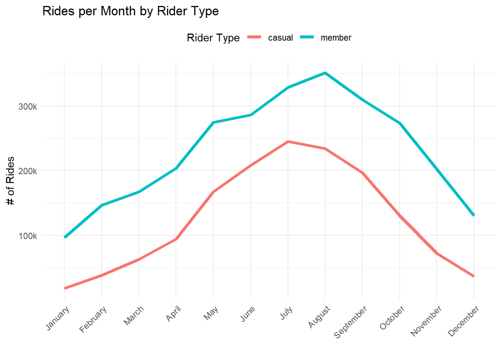
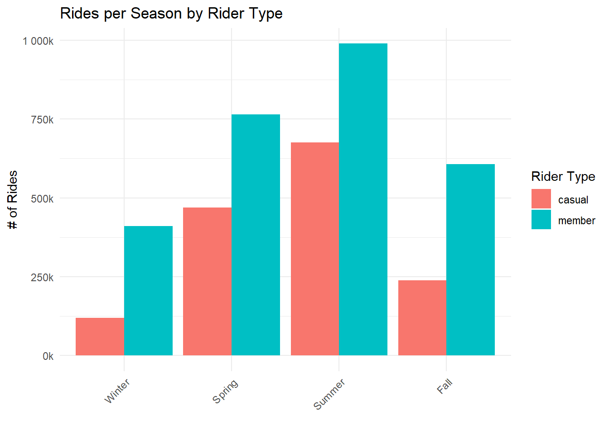
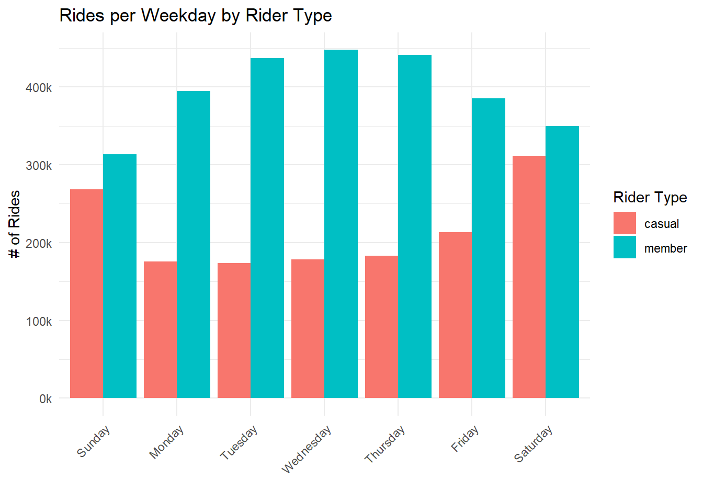
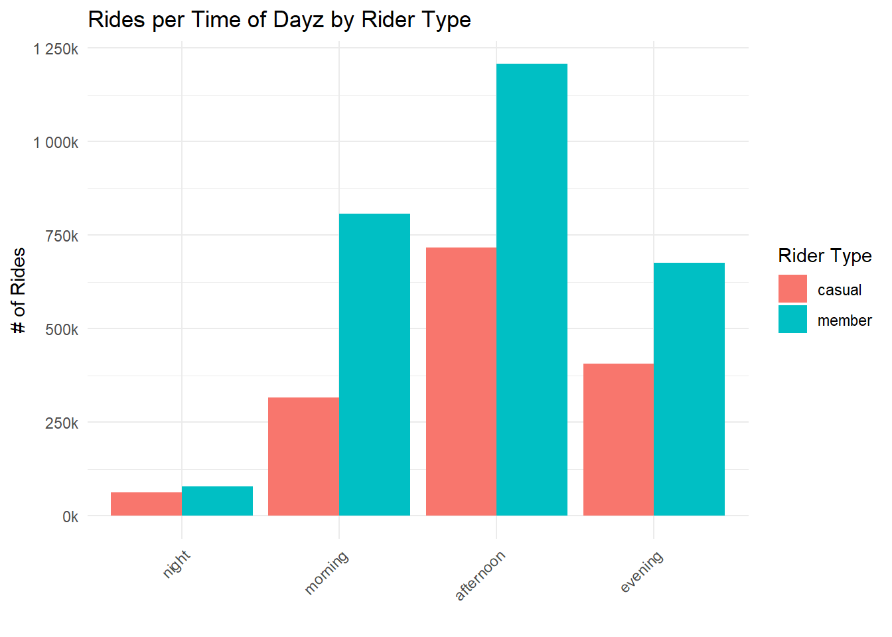
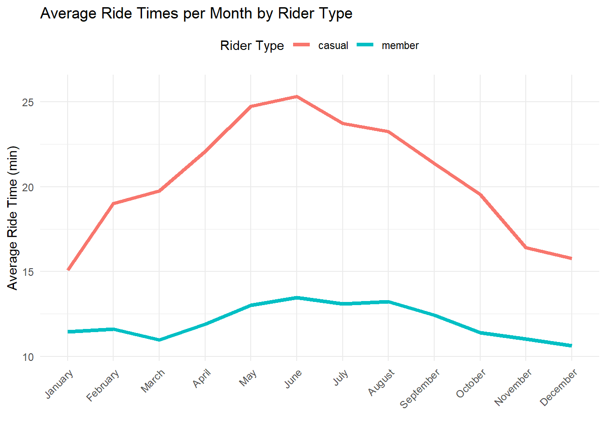
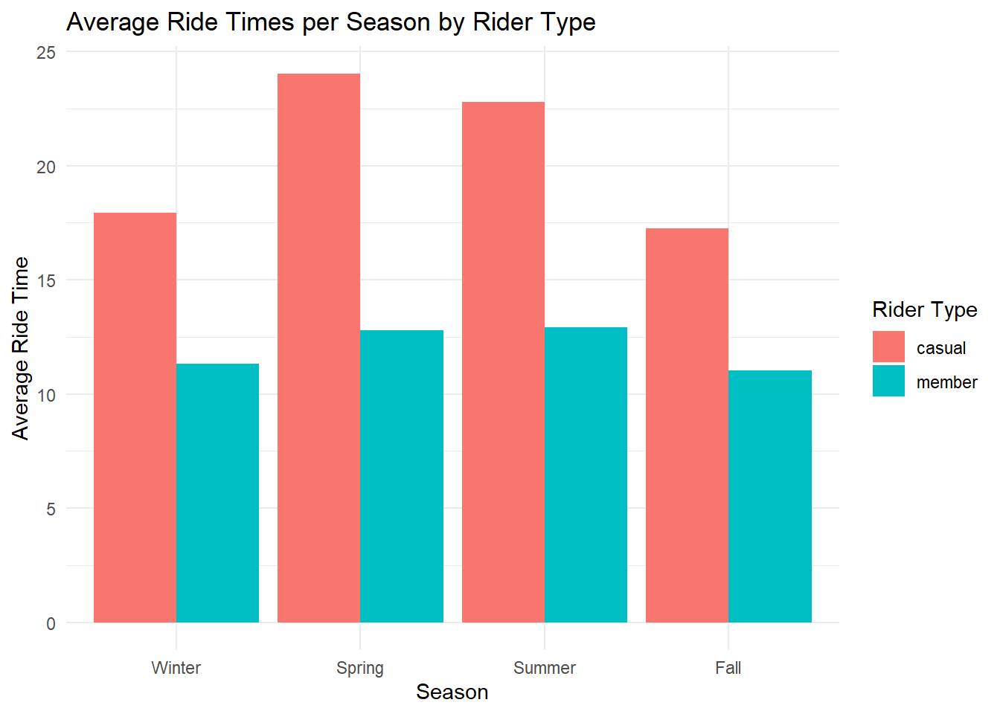
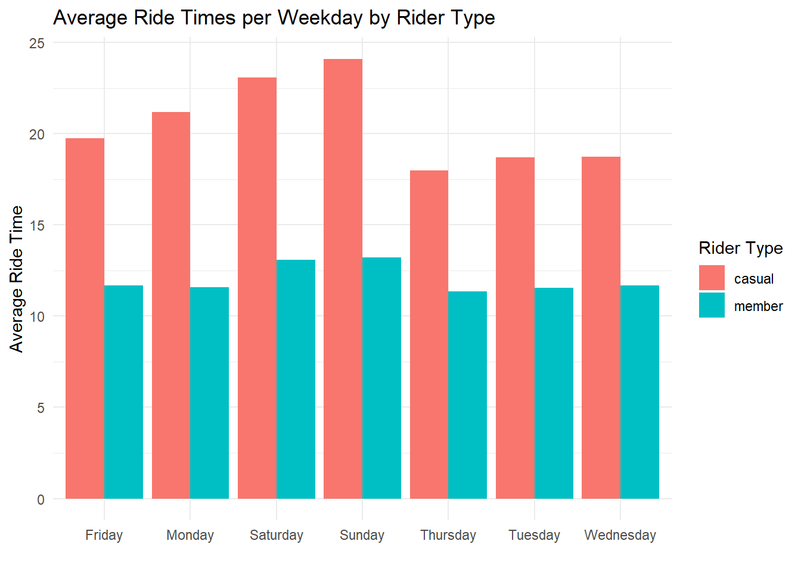
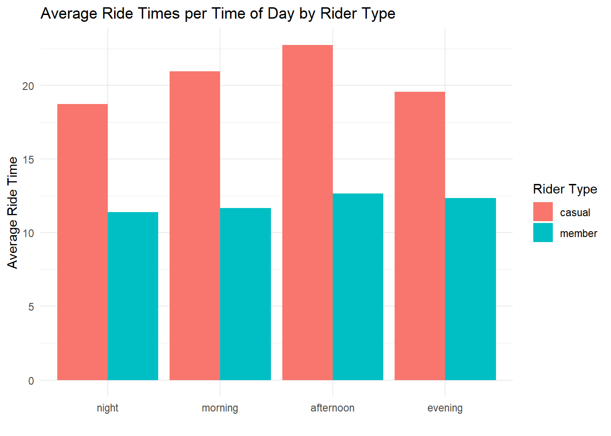
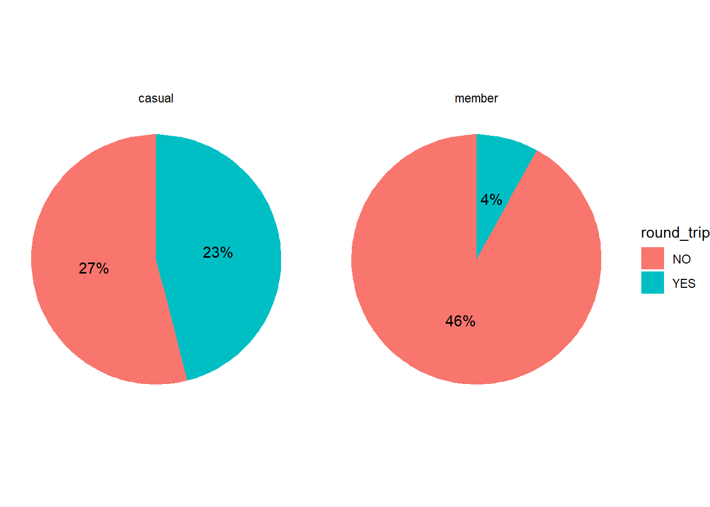
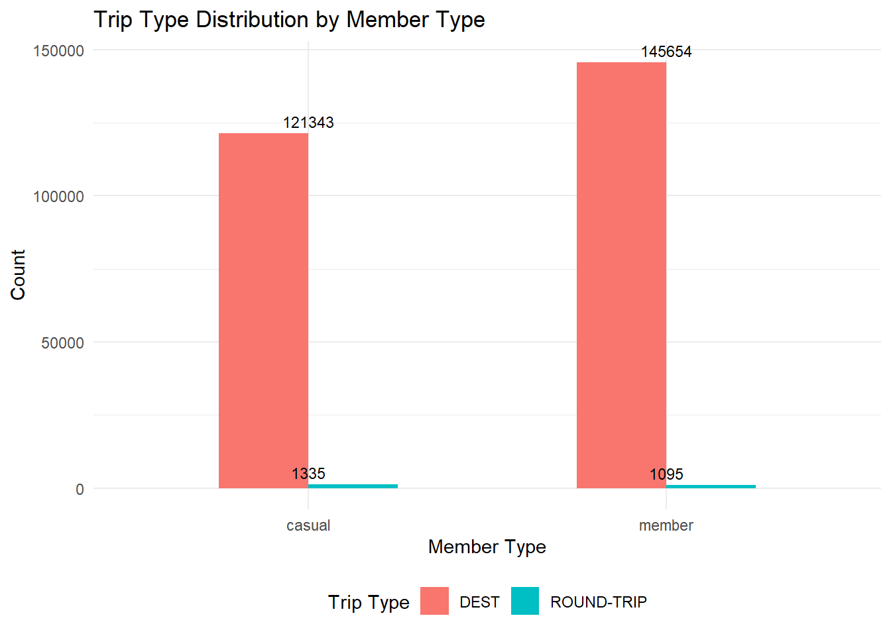

Cyclistic is a fictional Chicago bike-share company. Launched in 2016, the program has grown to include a fleet of nearly 6,000 geotracked rental bicycles with a network of almost 700 networked stations. Rides can start or end at any station.
Marketing Focus
Since its inception, Cyclistic has relied on general awareness campaigns to build its user base, offering a flexible pass program of single-ride and full-day passes as well as an annual membership option. Riders who purchase the annual plan are “members”, while those purchasing a pass product are considered “casual” users. Comparative analysis of user data since 2016 has revealed that the member user segment is much more lucrative, inspiring the company to consider refocusing its marketing resources on increasing member users, especially by converting casual riders to members.
Members vs. Casual Riders
To accomplish this goal, one top priority is discovering how these two segments of the rider population differ so that an effective marketing strategy can be devised to convert casual riders into members.
Business Task
Determine how annual members and casual riders use Cyclistic bikes differently. Propose a marketing strategy to convert casual riders to members, based on observations of differences.
Executive Summary
The following differences in casual and member riders were observed.
Casual riders take longer rides than members, and more of their rides are round-trip, starting and ending their ride at the same station.
More records are missing station data for casual riders, especially end station data. This suggests that casual riders more frequently abandon bikes instead of returning them to a station.
Casual ride use peaks on the weekends, while daily member use is more consistent.
Top stations used by casual riders are all tourist destinations along the waterfront, while top stations used by members are located near transit centers, urban residential and employer areas, universities, and corners with supermarkets or restaurants.
While system usage is higher across all user types in the summer months, member usage is more consistent throughout the year.
Many of these observations can be attributed to an undocumented split in the casual user group: many of these users are likely nonresident visitors. Because Cyclistic is interested in converting casual users to members, it would be of benefit to gain a better understanding of how many casual users are city residents before investing in a marketing focus shift to convert them. This strategy makes sense only if a sizable number of casual users are city residents and not visitors.
Assuming this is the case:
To convert more casual riders to member riders, my recommendation for Cyclistic is to focus on that subset of casual riders who live in Chicago and who would be inclined to benefit from convenient bike locations: students and people commuting between home and work or school, and who may be inclined to commute or run errands by bike. Marketing campaigns could emphasize the convenience of having stations located near universities, housing areas, and major employers, perhaps offering discounted memberships through employer or university partnerships, or special offers for those who have purchased a single day pass to convert to a membership. In this dataset, there are already more member riders than there are casual riders to convert, so for optimal future growth I would also advise continuing to target marketing to new customers, focusing on the benefits of membership.
Removed fields: start_station_id, end_station_id, start_lat, start_lng, end_lat, end_lng : these 6 fields were deemed irrelevant to this analysis and were removed.
Ride start and end locations are identified with 4 separate fields each: station name, station ID, latitude and longitude. All fields contained inaccuracies: station names were sometimes entered differently for the same locations, Station ID fields were deleted as mentioned above, and lat/long coordinates were frequently found to differ between records even for the same reported station. A spot check of specific intersections using Google Maps revealed that many of the reported coordinates are in the correct general area, but not at the correct location. Approximately 30% of all records lacked station name data and reported only coordinates for location. All coordinates were mapped in a dynamic chart in Tableau to visualize possible features of interest that could inform further investigation on a smaller set of records that include station names. Tableau Public struggled with the scope of the combined data, so a sample viz for the month of July 2023 was created and can be seen here. Tableau Public still struggled with uploading this data and creating an extract – it took about 30 minutes of waiting for it to complete these two tasks – and the information obtained from this visual did not warrant the time it would take to do this for every month.
Issues with Data Collection. Over 22% of all records were missing data in one or more of the fields identifying the stations. An evaluation of these records was conducted to extract useful information before excluding these records from station name-based analysis. This revealed NO missing start station coordinates, only missing end station coordinates; and more missing end station names than start station names. 78% of all records missing end station data were casual riders. This suggests an issue with bike return, perhaps unfamiliarity with the system or the city. Since this subset was only a small fraction of the total annual rides, it’s worth taking note, but no action is recommended at this time. Given the lack of supplemental information regarding the details of how this data is collected for non-docked rideables, we can only conclude that more bikes were picked up at a named station than were returned to one. The behavior of abandoning a borrowed vehicle at the end of a ride rather than returning it to a station is consistent with the article about rideable types cited above, and to anyone familiar with grocery carts and parking lots. Of the records missing one or both station names, there were more missing values for casual riders than for members, but both groups are missing station data over 20% of the time.
Building out station identifiers. Records that included both coordinates and station names were used as a basis to create a station name-coordinate key. Because of variations in coordinate reporting, no two records with the same station name shared exactly the same coordinates, so an average latitude and longitude was calculated for each station name. Attempts to geocode station names with no reported coordinates used Geoapify, Census Geocoder, and Google APIs/Google Maps. Geoapify included quantitative confidence rankings for each match and providing clarified addresses for confirmed locations; when confidence was lower, it sometimes reported the same coordinates for obviously different addresses. It also sometimes reported wrong addresses with high confidence. Census Geocoder was used next, with the input of those names that Geoapify was not able to match with 100% confidence. CG normalizes given addresses to real locations, helping to identify anomalies in the station name data where the same station was entered in different ways, but it sometimes fails to find matches for real addresses. Google API tools seem most accurate but only allow 300 operations a day on the free tier. Using these three tools together, with Google Maps as a spot-checking tool, all station names lacking coordinate data were assigned a validated geocode. After this was completed, station names and addresses were checked for duplicates and validated station name with geocode was mapped to original station name listing in the record so that each record with a station name can have a consistent geocode assigned for mapping. No attempt was made to reverse geocode the records with only coordinates to obtain a station.
Corner designations. Several station records include text appended to the station name designating on which corner or street side the station is located, useful for riders but complicating geocoding and not useful for this analysis. This text appeared consistently at the end of the record, but its formatting was not consistent: the east corner might appear as E, e, east, East, (e), (east) or (East), or -east, -East, or -E. Wherever one of these was found, it was noted separately in a “corner” column in the event this level of detail is useful for future analysis.
Data Preparation & Cleaning
After downloading data files from the above source, I loaded them into BigQuery for initial examination.
Total records: 5,023,660
Total fields: 13
Total reported stations (with names): 1667
Each record in this dataset describes a single ride within the Cyclistic rental system, with details about each ride’s start and end times and locations.
After the initial examination in BigQuery, source records were imported into RStudio for cleaning and analysis.
#1 Load librarieslibrary("tidyverse")
── Attaching core tidyverse packages ──────────────────────── tidyverse 2.0.0 ──
✔ dplyr 1.1.4 ✔ readr 2.1.5
✔ forcats 1.0.0 ✔ stringr 1.5.1
✔ ggplot2 3.5.1 ✔ tibble 3.2.1
✔ lubridate 1.9.3 ✔ tidyr 1.3.1
✔ purrr 1.0.2
── Conflicts ────────────────────────────────────────── tidyverse_conflicts() ──
✖ dplyr::filter() masks stats::filter()
✖ dplyr::lag() masks stats::lag()
ℹ Use the conflicted package (<http://conflicted.r-lib.org/>) to force all conflicts to become errors
library("janitor")
Attaching package: 'janitor'
The following objects are masked from 'package:stats':
chisq.test, fisher.test
library("skimr")library("here")
here() starts at C:/Users/amylc/Desktop/R/Cyclistic
library("scales")
Attaching package: 'scales'
The following object is masked from 'package:purrr':
discard
The following object is masked from 'package:readr':
col_factor
#3 Compare columns across monthly data files to confirm ready for mergecompare_df_cols(jul23, aug23, sep23, oct23, nov23, dec23, jan24, feb24, mar24, apr24, may24, jun24)
column_name jul23 aug23 sep23 oct23 nov23
1 end_lat numeric numeric numeric numeric numeric
2 end_lng numeric numeric numeric numeric numeric
3 end_station_id character character character character character
4 end_station_name character character character character character
5 ended_at character character character character character
6 member_casual character character character character character
7 ride_id character character character character character
8 rideable_type character character character character character
9 start_lat numeric numeric numeric numeric numeric
10 start_lng numeric numeric numeric numeric numeric
11 start_station_id character character character character character
12 start_station_name character character character character character
13 started_at character character character character character
dec23 jan24 feb24 mar24 apr24 may24 jun24
1 numeric numeric numeric numeric numeric numeric numeric
2 numeric numeric numeric numeric numeric numeric numeric
3 character character character character character character character
4 character character character character character character character
5 character character character character character character character
6 character character character character character character character
7 character character character character character character character
8 character character character character character character character
9 numeric numeric numeric numeric numeric numeric numeric
10 numeric numeric numeric numeric numeric numeric numeric
11 character character character character character character character
12 character character character character character character character
13 character character character character character character character
#4 Merge 12 data files into oneall_data <-rbind(jul23, aug23, sep23, oct23, nov23, dec23, jan24, feb24, mar24, apr24, may24, jun24)
ride_id rideable_type started_at
[1,] "00000065B3150FF2" "classic_bike" "2023-07-01 00:00:00"
[2,] "FFFFFCD6EE6DA3DA" "electric_bike" "2024-06-30 23:55:17.066"
ended_at start_station_name start_station_id
[1,] "2023-07-01 00:01:26" NA NA
[2,] "2024-06-30 23:59:57.930" NA NA
end_station_name end_station_id start_lat start_lng end_lat end_lng
[1,] NA NA "41.63" "-87.94" NA NA
[2,] NA NA "42.07" "-87.46" NA NA
member_casual
[1,] "casual"
[2,] "member"
There were many rows with missing data. Set was examined for any relevant observations related to the missing data before removing these rows from further analysis.
#8 Count missing data in each column colSums(is.na(all_data))
# Add a new column to all_data to indicate whether a row has any missing values all_data$has_missing <-rowSums(is.na(all_data)) >0#summarize without making a new df all_data %>%group_by(has_missing) %>%summarize(count =n())
There are 7919 missing values for end station coordinates, but NO missing values for start station coordinates. There are more missing values for end station names than start station names, and many more missing station names than missing station coordinates. This may be related to the data collection methods for coordinates vs. station names.
Examining whether the rider type profile is different for the rows with missing data vs. rows without missing data.
#9 Add a new column to indicate whether a row has any missing valuesall_data$has_missing <-rowSums(is.na(all_data)) >0# Summarize the data by count of records with missing values, grouped by "member_casual" all_data %>%group_by(member_casual, has_missing) %>%summarize(count =n())
`summarise()` has grouped output by 'member_casual'. You can override using the
`.groups` argument.
Pearson's Chi-squared test with Yates' continuity correction
data: table(all_data$member_casual, all_data$has_missing)
X-squared = 2284.5, df = 1, p-value < 2.2e-16
this result indicates a real difference between the groups: rides from the casual group are more likely to have missing values for station names or coordinates.
Examining the rider type difference for records that are missing end station values.
#11 create df of records missing end stations, grouped by rider typemissing_end_stations <- all_data %>%filter(is.na(end_station_name) &is.na(end_lat) &is.na(end_lng)) %>%group_by(member_casual) %>%summarize( num_records =n(), end_station_name_missing =sum(is.na(end_station_name)), end_lat_missing =sum(is.na(end_lat)), end_lng_missing =sum(is.na(end_lng)) ) #assign variables to counts and calculate % of total that are casual riders c <-sum(all_data$member_casual=="casual") m <-sum(all_data$member_casual=="member") print('% casual riders:')
[1] "% casual riders:"
c/(c+m)
[1] 0.3573857
79% of records missing all end station data are from casual riders. Given that casual riders are only 36% of all riders, this suggests more of an issue with bike returns by casual riders. Perhaps these bikes are abandoned rather than being returned to a station. Or perhaps Cyclistic encourages riders to leave bikes anywhere for their convenience.
How many records are missing BOTH start and end station names? These are riders that logged rides from points other than a system station.
#12 no start or end stationall_data %>%filter(is.na(end_station_name) &is.na(start_station_name)) %>%group_by(member_casual) %>%summarize( num_records =n())
# A tibble: 2 × 2
member_casual num_records
<chr> <int>
1 casual 194260
2 member 259372
Total records missing both station names: 393999, 6.8% of all records
Count of riders with missing station names:
casual: 164180/c = 8%
member: 229819/m = 6%
A higher percentage of casual rider records are missing all station names. This suggests that there are issues with station data collection that are influenced by rider familiarity with the system.
Clean up
#13 Remove the source files from the environmentrm(jul23, aug23, sep23, oct23, nov23, dec23, jan24, feb24, mar24, apr24, may24, jun24)
#14 Remove station ID and coordinate fieldsall_data <- all_data %>%select(-start_station_id, -end_station_id, -start_lat, -start_lng, -end_lat, -end_lng)# Remove asterisk character from start_station_name and end_station_name fieldsall_data$start_station_name <-gsub("\\*", "", all_data$start_station_name)all_data$end_station_name <-gsub("\\*", "", all_data$end_station_name)
#15 handle duplicates# Count duplicate records based on ride_idpaste("Number of duplicate values :", sum(duplicated(all_data$ride_id)))
[1] "Number of duplicate values : 211"
# Identify duplicatesduplicate_ride_ids <- all_data[duplicated(all_data$ride_id) |duplicated(all_data$ride_id, fromLast =TRUE), "ride_id"]#17 Keep only the first occurrence of each unique IDall_data <- all_data[!duplicated(all_data[c("ride_id")]), ]
Count members vs casual riders
#16 count m vs cvalue_counts <-table(all_data$member_casual)percentages <-prop.table(value_counts) *100value_counts_with_labels <-cbind(count = value_counts, percentage = percentages)print(value_counts_with_labels)
count percentage
casual 2049254 35.73759
member 3684916 64.26241
Create new DF, excluding rows with blanks.
#17 create new df no blanksall_data_no_blanks <- all_data %>%na.omit()
Check whether balance of c vs m has changed & assign variables to rider type counts
#19 Convert date fields from char to datetime all_data$ended_at <-as.POSIXct(all_data$ended_at, format ="%Y-%m-%d %H:%M:%S") all_data$started_at <-as.POSIXct(all_data$started_at, format ="%Y-%m-%d %H:%M:%S")
Add fields to all_data: trip, trip_type, trip length, season, month, weekday, and time of day
#20 add fields# Add trip field to combine start and end stations all_data$trip <-paste(all_data$start_station_name, all_data$end_station_name, sep =" to ") # add trip_type field to indicate roundtrip or destination all_data$trip_type <-ifelse(all_data$start_station_name == all_data$end_station_name, "rt", "dest") # Set trip_type to NA if start_station_name and end_station_name fields are both NA or blank all_data <- all_data %>%mutate(trip_type =ifelse((is.na(start_station_name) | start_station_name =="") & (is.na(end_station_name) | end_station_name ==""), NA, trip_type)) # Add trip_length column all_data$trip_length <- all_data$ended_at - all_data$started_at # Add season column all_data$season <-factor(quarter(all_data$started_at), labels =c("Winter", "Spring", "Summer", "Fall")) # Add month column all_data$month <-month(all_data$started_at) # Add weekdays column all_data$weekday <-weekdays(all_data$started_at) # Add time_of_day column all_data$time_of_day <-cut(as.numeric(format(all_data$started_at, "%H")), breaks =c(0, 6, 12, 18, 24), labels =c("night", "morning", "afternoon", "evening"), right =FALSE)
vvvvvvvvvvvvvvvvvvvvvvvvvvvvvvvvvvvvvvvc
Recreate all_data_no_blanks with new time-based fields
#21 recreate no blanks DFall_data_no_blanks <- all_data %>%na.omit()
create DFs summarizing usage by rider type and time parameters
#22 by monthrides_by_month <- all_data_no_blanks %>%group_by(month, member_casual) %>%summarize(ride_count =n())
`summarise()` has grouped output by 'month'. You can override using the
`.groups` argument.
#31 add field for rounding avg trip length to 2 placestrip_length_m$rounded_avg <-round(trip_length_m$avg_trip_length, digits =2)
Create field for minutes
#32 add field for minutestrip_length_m$minutes <-floor(trip_length_m$rounded_avg)
Create field for seconds
#33 add field for secondstrip_length_m$seconds <-round((trip_length_m$rounded_avg - trip_length_m$minutes)*60, 0)
Create field combining minutes and seconds
#34 add field combining min and sectrip_length_m$elapsed_time <-paste(trip_length_m$minutes, trip_length_m$seconds, sep =":")
STATION DATA
Used BigQuery / SQL to generate list of unique station names, and imported it into R as csv. Mainly just to practice SQL and figure out the best way to start to manage a large dataset.
#35 {sql connection=}#SELECT DISTINCT start_station_name AS station_name#FROM `sixth-clone-430823-a6.bikes_20240727.all_records_and_calcs`#UNION DISTINCT#SELECT DISTINCT end_station_name AS station_name#FROM `sixth-clone-430823-a6.bikes_20240727.all_records_and_calcs`;# import final_station_coords# final_station_coords <- read_excel("data/final_station_coords.xlsx")
Using geocoding tools and Excel, as indicated in the narrative, generated a station index file with lat-long coordinates for each named station and imported this to the R project as final_station_coords. This was helpful in establishing background on popular named stations and developing hypotheses about why riders might want to go to specific locations.
Create DF of top 10 starting stations, casual vs. member riders
`summarise()` has grouped output by 'member_casual'. You can override using the
`.groups` argument.
Create DF of top 10 ending stations, casual vs. member riders
#37 top 10 end stationstop_10_end_stations <- all_data %>%filter(end_station_name !=""&!is.na(end_station_name)) %>%group_by(member_casual, end_station_name) %>%summarize(count =n()) %>%arrange(desc(count)) %>%group_by(member_casual) %>%slice(1:10) %>%ungroup()
`summarise()` has grouped output by 'member_casual'. You can override using the
`.groups` argument.
Create DF of Top 10 destination and round trip rides, casual vs. member
#38 top 10 rides dest and rt# Top 10 destination rides , casual vs. membertop_10_dest_rides <- all_data %>%filter(trip_type =="dest") %>%group_by(member_casual, trip) %>%summarize(count =n()) %>%arrange(desc(count)) %>%top_n(10)
`summarise()` has grouped output by 'member_casual'. You can override using the
`.groups` argument.
Selecting by count
# Top 10 round trip rides, casual vs. membertop_10_rt_rides <- all_data %>%filter(trip_type =="rt") %>%group_by(member_casual, trip) %>%summarize(count =n()) %>%arrange(desc(count)) %>%top_n(10)
`summarise()` has grouped output by 'member_casual'. You can override using the
`.groups` argument.
Selecting by count
Create DF of stations used on each ride
#39 Create DF of stations used on each ridestations_by_ride <- all_data_no_blanks %>%pivot_longer(cols =c(start_station_name, end_station_name), names_to ="station_type", values_to ="station_name") %>%select(ride_id, station_name, member_casual)# Omit blanksstations_by_ride <- stations_by_ride %>%filter(!is.na(station_name) & station_name !="")
Create DF of top 10 stations used overall
#40 Top 10 stations used overalltop_10_stations_overall <- stations_by_ride %>%group_by(member_casual, station_name) %>%summarize(count =n()) %>%arrange(desc(count)) %>%top_n(10)
`summarise()` has grouped output by 'member_casual'. You can override using the
`.groups` argument.
Selecting by count
We will examine differences across the following measures:
Overall system usage, trip length (in minutes) by
Season
Month
Day of the week
Time of day
Popular starting stations
Trip types
Rideable type
OVERALL USAGE
BY MONTH (line)
#42 usage by monthggplot(rides_by_month, aes(x = month_name, y = ride_count, color = member_casual, group = member_casual)) +geom_line(stat ="summary", size =1.5) +labs(title ="Rides per Month by Rider Type", x ="", y ="# of Rides", color ="Rider Type") +theme_minimal() +theme(axis.text.x =element_text(angle =45, hjust =1)) +theme(legend.position ="top") +scale_y_continuous(labels =label_number(scale =1e-3, suffix ="k"))
Warning: Using `size` aesthetic for lines was deprecated in ggplot2 3.4.0.
ℹ Please use `linewidth` instead.
No summary function supplied, defaulting to `mean_se()`

BY SEASON (bar)
#43 usage by seasonggplot(rides_by_season, aes(x = season, y = ride_count, fill = member_casual)) +geom_bar(stat ="summary", position ="dodge") +labs(title ="Rides per Season by Rider Type", x ="", y ="# of Rides") +theme_minimal() +theme(axis.text.x =element_text(angle =45, hjust =1)) +labs(fill ="Rider Type") +scale_y_continuous(labels =label_number(scale =1e-3, suffix ="k"))
No summary function supplied, defaulting to `mean_se()`

BY WEEKDAY (bar)
#44 usage by weekday rides_by_weekday$weekday <-factor(rides_by_weekday$weekday, levels =c("Sunday", "Monday", "Tuesday", "Wednesday", "Thursday", "Friday", "Saturday")) ggplot(rides_by_weekday, aes(x = weekday, y = ride_count, fill = member_casual)) +geom_bar(stat ="summary", position ="dodge") +labs(title ="Rides per Weekday by Rider Type", x ="", y ="# of Rides") +theme_minimal() +theme(axis.text.x =element_text(angle =45, hjust =1)) +labs(fill ="Rider Type") +scale_y_continuous(labels =label_number(scale =1e-3, suffix ="k") )
No summary function supplied, defaulting to `mean_se()`

BY TIME OF DAY (bar)
#45 usage by time of day ggplot(rides_by_time_of_day, aes(x = time_of_day, y = ride_count, fill = member_casual)) +geom_bar(stat ="summary", position ="dodge") +labs(title ="Rides per Time of Dayz by Rider Type", x ="", y ="# of Rides") +theme_minimal() +theme(axis.text.x =element_text(angle =45, hjust =1)) +labs(fill ="Rider Type") +scale_y_continuous(labels =label_number(scale =1e-3, suffix ="k") )
No summary function supplied, defaulting to `mean_se()`

TRIP LENGTH
BY MONTH (line)
#46 trip length by monthggplot(trip_length_m, aes(x = month_name, y = rounded_avg, color = member_casual, group = member_casual)) +geom_line(stat ="summary", size =1.5) +labs(title ="Average Ride Times per Month by Rider Type", x ="", y ="Average Ride Time (min)", color ="Rider Type") +theme_minimal() +theme(axis.text.x =element_text(angle =45, hjust =1)) +theme(legend.position ="top")
No summary function supplied, defaulting to `mean_se()`

BY SEASON (bar)
#47 trip length by seasonggplot(trip_length_m, aes(x = season, y = rounded_avg, fill = member_casual)) +geom_bar(stat ="summary", fun ="mean", position ="dodge") +labs(title ="Average Ride Times per Season by Rider Type", x ="Season", y ="Average Ride Time") +theme_minimal() +labs(fill ="Rider Type")

BY WEEKDAY (bar)
#48 trip length by weekdayggplot(trip_length_m, aes(x = weekday, y = rounded_avg, fill = member_casual)) +geom_bar(stat ="summary", fun ="mean", position ="dodge") +labs(title ="Average Ride Times per Weekday by Rider Type", x ="", y ="Average Ride Time") +theme_minimal() +labs(fill ="Rider Type")

BY TIME OF DAY (bar)
#49 trip length by time of dayggplot(trip_length_m, aes(x = time_of_day, y = rounded_avg, fill = member_casual)) +geom_bar(stat ="summary", fun ="mean", position ="dodge") +labs(title ="Average Ride Times per Time of Day by Rider Type", x ="", y ="Average Ride Time") +theme_minimal() +labs(fill ="Rider Type")

STATION USAGE
create new field for just the date from started_at
#50 create new field for datelibrary(dplyr)all_data_no_blanks <- all_data_no_blanks %>%mutate(date =as.Date(started_at))
explore rider data by counting members vs casual at each named station for each day
#51 rider type count per stationlibrary(dplyr) named_stations <- all_data_no_blanks %>%filter(!is.na(start_station_name) & start_station_name !="") %>%group_by(date, start_station_name, member_casual) %>%summarize(count =n())
`summarise()` has grouped output by 'date', 'start_station_name'. You can
override using the `.groups` argument.
`summarise()` has grouped output by 'member_casual'. You can override using the
`.groups` argument.
#55 plot top 50 trips as pie chartggplot(round_trip_summary, aes(x ="", y = count, fill = round_trip)) +geom_bar(stat ="identity", width =1) +coord_polar("y", start =0) +facet_wrap(~member_casual) +geom_text(aes(label =paste0(round(count/sum(count) *100), "%")), position =position_stack(vjust =0.5)) +theme_void()

When looking at the top 50 trips for each rider type, more casual riders are returning bikes to the same station, which suggests more recreational rides (for example, taking a ride along the waterfront and then returning to the same location) vs. commuter or errand rides.
Looking only at the most popular 50 trips for both rider types exaggerates the influence of tourist use of the bicycle system on casual rider behavior. When trip type is examined across the whole dataset, nearly all riders of both types are taking destination rides. The users we are most interested in are not the tourists, but the casual riders who live in Chicago and can be converted to member riders.
trip type across whole dataset
#56 This DF refines the type of trip for each record.library(dplyr) all_trips3 <- all_data_no_blanks %>%mutate(trip_type =ifelse(start_station_name == end_station_name, "ROUND-TRIP", ifelse(end_station_name =="", "NO_END_STN", ifelse(start_station_name =="", "NO_START_STN", "DEST"))) ) %>%group_by(member_casual, start_station_name, end_station_name) %>%summarize(total_trips =n(), trip_type =first(trip_type)) %>%arrange(desc(total_trips)) %>%mutate(trip =paste(start_station_name, "to", end_station_name))
`summarise()` has grouped output by 'member_casual', 'start_station_name'. You
can override using the `.groups` argument.
#57 plot trip type across whole dataset# Ensure member_casual is a factor with appropriate levelsall_trips3$member_casual <-factor(all_trips3$member_casual, levels =c("casual", "member"))ggplot(all_trips3, aes(x = member_casual, fill = trip_type)) +geom_bar(position ="dodge", width =0.5) +# Change position to "dodge"geom_text(stat ="count", aes(label =stat(count), y =stat(count)), vjust =-0.5, size =3) +# Display count totals within the bar spacelabs(title ="Trip Type Distribution by Member Type",fill ="Trip Type",x ="Member Type",y ="Count") +theme_minimal() +theme(legend.position ="bottom")
Warning: `stat(count)` was deprecated in ggplot2 3.4.0.
ℹ Please use `after_stat(count)` instead.

summarize
#58 summarize trip type across all recordsall_trips3_summary <- all_trips3 %>%group_by(member_casual, trip_type) %>%summarize(count =n())
`summarise()` has grouped output by 'member_casual'. You can override using the
`.groups` argument.
member only trips
#59 identify trips taken by members that were not taken by casualdistinct_trips_members_not_casual <-unique(all_trips3$trip[all_trips3$member_casual =="member"&!(all_trips3$trip %in% all_trips3$trip[all_trips3$member_casual =="casual"])])all_trips3_distinct_trips_members_not_casual <-data.frame(trip = distinct_trips_members_not_casual)
casual only trips
#60 identify trips taken by casual that were not taken by membersdistinct_trips_casual_not_member <-unique(all_trips3$trip[all_trips3$member_casual =="casual"&!(all_trips3$trip %in% all_trips3$trip[all_trips3$member_casual =="member"])])all_trips3_distinct_trips_casual_not_member <-data.frame(trip = distinct_trips_casual_not_member)
#61 Convert the 'lat' field from character to double in final_station_coords#final_station_coords$lat <- as.double(final_station_coords$lat)
Top 10 Stations Used by Members vs Casual
#62 plot top 10 stations used by members vs casual# Load the required librarieslibrary(dplyr)library(leaflet)library(htmlwidgets)# Read final_station_coords data from external file final_station_coords <- readxl::read_excel("../data/final_station_coords.xlsx")# Merge top_10_stations_overall with final_station_coords to get coordinatesmerged_data <-merge(top_10_stations_overall, final_station_coords, by.x ="station_name", by.y ="street", all.x =TRUE)# Filter out records with null values in member_casualmerged_data <- merged_data %>%filter(!is.na(member_casual))# Define color palette for member_casual groupscolor_palette <-c("blue", "red") # Add more colors if needed# Create a named vector with colors and labelslegend_data <-setNames(color_palette, unique(merged_data$member_casual))# Create a leaflet map with different colored markers and legendmap <-leaflet(merged_data) %>%addTiles(options =tileOptions(noWrap =TRUE, force_https =TRUE)) %>%addCircleMarkers(lng =~long, lat =~lat, color =~factor(member_casual), radius =5, fillColor =~color_palette[as.numeric(factor(member_casual))], fillOpacity =0.8) %>%addLegend(position ="bottomright", colors = color_palette, labels =names(legend_data))# Save the leaflet map as an HTML widgetsaveWidget(map, file ="leaflet_map.html", selfcontained =TRUE)#Display the mapmap
The locations of the top 10 destinations for each rider type were evaluated in Google Maps for key amenities and other features that would be likely to attract visits. Each of the top 10 casual rider stations is located at a major tourist attraction along the waterfront, while member riders’ top 10 destinations are transit stations, residential and employment centers, schools, and restaurant areas. This underscores the observation that many casual riders in the current system are visitors to the city, not residents, an observation further supported by the other differences noted between these groups: casual riders use the system more on weekends, take more round trips and longer rides overall than members. To convert more casual riders to member riders, my recommendation for Cyclistic is to focus on that subset of casual riders who live in Chicago and who would be inclined to benefit from convenient bike locations: students and people commuting between home and work or school, and who may be inclined to commute or run errands by bike. Marketing campaigns could emphasize the convenience of having stations located near universities, housing areas, and major employers, perhaps offering discounted memberships through employer or university partnerships; and special offers for those who have purchased a single day pass to convert to a membership. In this dataset, there are already more member riders than there are casual riders to convert, so for optimal future growth I would also advise continuing to target marketing to new customers, focusing on the benefits of membership.
For future analysis, it may be helpful to isolate the resident subset of casual riders to evaluate whether resident casual and member riders fundamentally use the system differently. This would be most reliable with supplemental data identifying which rides were taken by city residents. Within the existing dataset, starting with the top stations used by members, one could compare casual rides that used the same stations to identify a subset of casual rides that are likely city residents to evaluate whether they behave differently from member riders. One could also further examine differences in trips taken by members vs casual riders; each subset includes many trips that were taken by one group and not the other. Because there are so many potential trips, of which many were taken by only one or two riders, it would be challenging to draw meaningful conclusions from such a trip analysis.